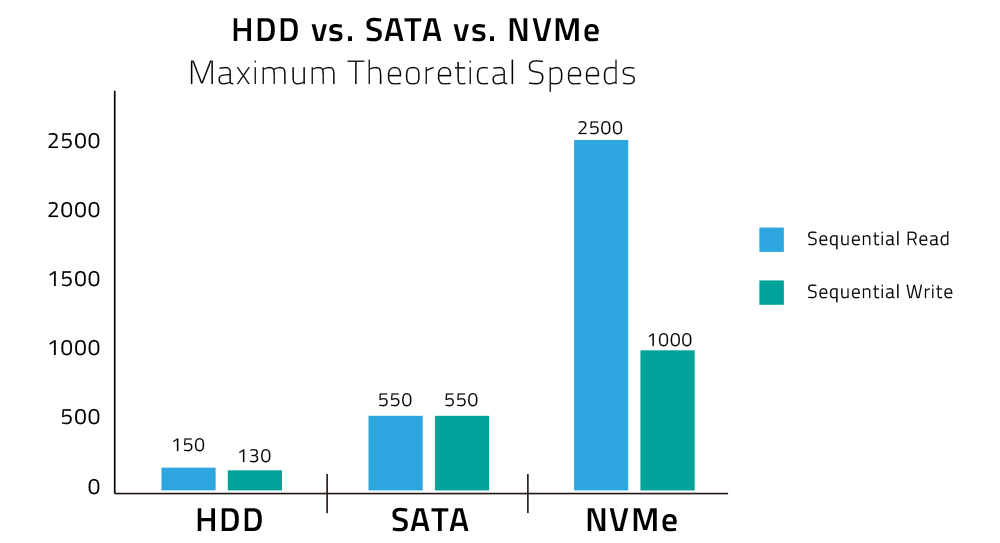

Voor iemand een klassieke harde schijf vervangt door een SSD op de SATA interface zijn er onmiddellijk grote verschillen qua performantie op te merken.
Maar... ondertussen zijn SSD's al zodanig geëvolueerd dat zelfs SATA III met zijn transfersnelheid van 600 MB/s niet meer kan volgen. SATA communiceert met de harde schijf via de Advanced Host Controller Interface of AHCI en net hier bevindt zich het probleem.
Zoals je weet is AHCI geoptimaliseerd voor mechanische harde schijven en focust het zich om de beweging van de koppen te optimaliseren. Bij SSD's is dit natuurlijk niet van toepassing.
Als oplossing gebruiken fabrikanten de PCI Express aansluiting, deze bevindt zich dichter bij de processor dan de SATA aansluiting en heeft een theoretische limiet van maar liefst 4 GB/s. Maar als we nog steeds AHCI gebruiken is het volle potentieel van een SSD nog steeds niet toegankelijk. Vandaar dat men kiest voor Non-Volatile Memory Express ten voordele van AHCI.
NVMe is de nieuwe standaard wanneer het gaat om SSD's aan te spreken. Terwijl een mechanische harde schijf geen gelijktijdige lees- en schrijf operaties aankan is een SSD hier wel toe in staat. Het grootste verschil zit hem dan ook in het Command Queueing mechanisme. De command queue is een wachtrij met I/O commando's.
Terwijl AHCI slechts 1 queue heeft met 32 commando's ondersteunt NVMe liefst 65536 queue's met elk 65536 commando's. De performantiewinst is dan ook substantieel.

Naar de toekomst toe worden harde schijven meer en meer aangesloten via M.2 in tegenstelling tot SATA of PCI Express. Over deze aansluiting leer je zo dadelijk meer.